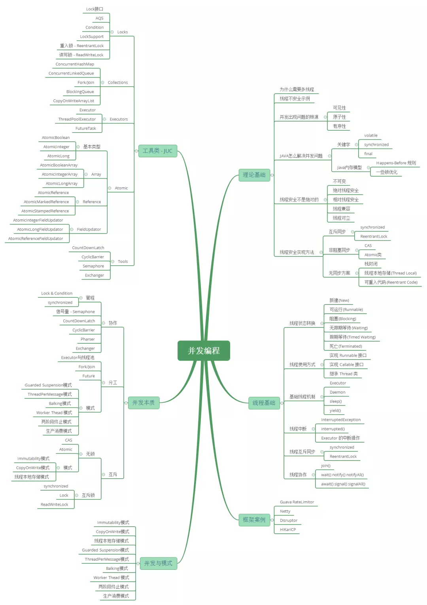
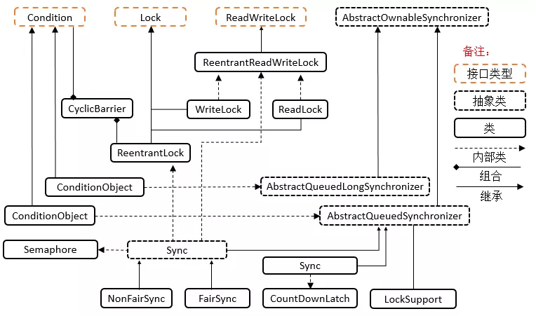
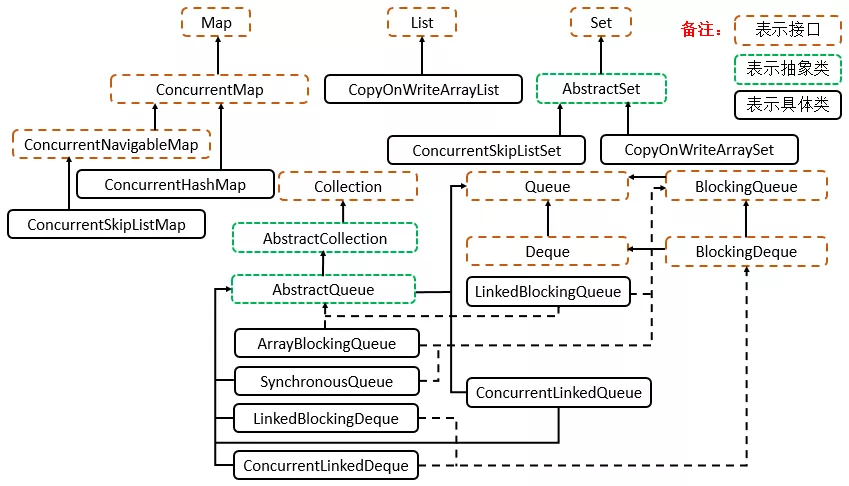
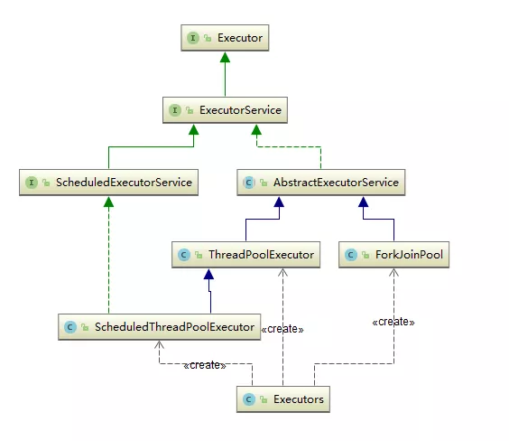

知识体系系统性梳理

Java 并发之基础
首先全局的了解并发的知识体系，同时了解并发理论基础和线程基础，并发关键字等，这些是理解 Java 并发框架的基础。
Java 并发 - 知识体系
Java 并发 - 理论基础
- 多线程的出现是要解决什么问题的？
- 线程不安全是指什么？举例说明
- 并发出现线程不安全的本质什么？可见性，原子性和有序性。
- Java是怎么解决并发问题的？3个关键字，JMM 和8个 Happens-Before。
- 线程安全是不是非真即假？不是
- 线程安全有哪些实现思路？
- 如何理解并发和并行的区别？
Java 并发 - 线程基础
- 线程有哪几种状态？分别说明从一种状态到另一种状态转变有哪些方式？
- 通常线程有哪几种使用方式？
- 基础线程机制有哪些？
- 线程的中断方式有哪些？
- 线程的互斥同步方式有哪些？如何比较和选择？
- 线程之间有哪些协作方式？
并发关键字 volatile、final、synchronized
关键字 synchronized 详解
- Synchronized 可以作用在哪里？分别通过对象锁和类锁进行举例。
- Synchronized 本质上是通过什么保证线程安全的？分三个方面回答：加锁和释放锁的原理，可重入原理，保证可见性原理。
- Synchronized 由什么样的缺陷？Java Lock 是怎么弥补这些缺陷的。
- Synchronized 和 Lock 的对比，和选择？
- Synchronized 在使用时有何注意事项？
- Synchronized 修饰的方法在抛出异常时，会释放锁吗？
- 多个线程等待同一个 snchronized 锁的时候，JVM 如何选择下一个获取锁的线程？
- Synchronized 使得同时只有一个线程可以执行，性能比较差，有什么提升的方法？
- 我想更加灵活地控制锁的释放和获取（现在释放锁和获取锁的时机都被规定死了），怎么办？
- 什么是锁的升级和降级？什么是 JVM 里的偏斜锁、轻量级锁、重量级锁？
- 不同的 JDK 中对 Synchronized 有何优化？
关键字 volatile 详解
- volatile 关键字的作用是什么？
- volatile 能保证原子性吗？
- 之前32位机器上共享的 long 和 double 变量的为什么要用 volatile？现在64位机器上是否也要设置呢？
- i++ 为什么不能保证原子性？
- volatile 是如何实现可见性的？内存屏障。
- volatile 是如何实现有序性的？happens-before 等。
- 说下 volatile 的应用场景？
关键字 final 详解
- 所有的 final 修饰的字段都是编译期常量吗？
- 如何理解 private 所修饰的方法是隐式的 final？
- 说说 final 类型的类如何拓展？比如 String 是 final 类型，我们想写个 MyString 复用所有 String 中方法，同时增加一个新的 toMyString() 的方法，应该如何做？
- final 方法可以被重载吗？可以
- 父类的 final 方法能不能够被子类重写？不可以。
- 说说 final 域重排序规则？
- 说说 final 的原理？
- 使用 final 的限制条件和局限性？
JUC 框架
Lock 框架和 Tools 类
类结构总览

接口 Condition
Condition 为接口类型，它将 Object 监视器方法（wait、notify 和 notifyAll）分解成截然不同的对象，以便通过将这些对象与任意 Lock 实现组合使用，为每个对象提供多个等待 set （wait-set）。其中，Lock 替代了 synchronized 方法和语句的使用，Condition 替代了 Object 监视器方法的使用。可以通过 await()，signal() 来休眠/唤醒线程。
在 JUC 锁：AbstractQueuedSynchonizer 详解中类的内部类 conditionobject 类有具体分析。
接口 Lock
Lock 为接口类型，Lock 实现提供了比使用 synchronized 方法和语句可获得的更广泛的锁定操作。此实现允许更灵活的结构，可以具有差别很大的属性，可以支持多个相关的 Condition 对象。
接口 ReadWriteLock
ReadWriteLock 为接口类型，维护了一对相关的锁，一个用于只读操作，另一个用于写入操作。只要没有 writer，读取锁可以由多个 reader 线程同时保持。写入锁是独占的。
抽象类 AbstractOwnableSynchonizer
AbstractOwnableSynchonizer 为抽象类，可以由线程以独占方式拥有的同步器。此类为创建锁和相关同步器（伴随着所有权的概念）提供了基础。AbstractOwnableSynchronizer 类本身不管理或使用此信息。但是，子类和工具可以使用适当维护的值帮助控制和监视访问以及提供诊断。
抽象类（long）AbstractQueuedLongSynchronizer
AbstractQueuedLongSynchronizer 为抽象类，以 long 形式维护同步状态的一个 AbstractQueuedSynchronizer 版本。此类具有的结构、属性和方法与 AbstractQueuedSynchronizer 完全相同，但所有与状态相关的参数和结果都定义为 long 而不是 int。当创建需要 64 位状态的多级别锁和屏障等同步器时，此类很有用。
核心抽象类 AbstractQueuedSynchonizer
AbstractQueuedSynchonizer 为抽象类，其为实现依赖于先进先出（FIFO） 等待队列的阻塞锁和相关同步器（信号量、事件，等等）提供一个框架。此类的设计目标是成为依靠单个原子 int 值来表示状态的大多数同步器的一个有用基础。
详细分析请看：JUC 锁 AbstractQueuedSynchonizer 详解。
锁常用类 LockSupport
LockSupport 为常用类，用来创建锁和其他同步类的基本线程阻塞原语。LockSupport 的功能和 Thread 中的 Thread.suspend() 和 Thread.resume() 有点类似，LockSupport 中的 park() 和 unpark() 的作用分别是阻塞线程和解除阻塞线程。但是 park() 和 unpark() 不会遇到 Thread.suspend 和 Thread.resume 所可能引发的死锁问题。
详细分析请看：JUC 锁 LockSupport 详解。
锁常用类 ReentrantLock
ReentrantLock 为常用类，它是一个可重入的互斥锁 Lock，它具有与使用 synchronized 方法和语句所访问的隐式监视器锁相同的一些基本行为和语义，但功能更强大。
详细分析请看：JUC锁 ReentrantLock 详解。
锁常用类 ReentrantReadWriteLock
ReentrantReadWriteLock 是读写锁接口 ReadWriteLock 的实现类，它包括 Lock 子类 ReadLock 和 WriteLock。ReadLock 是共享锁，WriteLock 是独占锁。
详细分析请看：JUC 工具类 ReentrantReadWriteLock 详解。
锁常用类 StampedLock
它是 Java8 在 java.util.concurrent.locks 新增的一个 API。StampedLock 控制锁有三种模式（写，读，乐观读），一个 StampedLock 状态是由版本和模式两个部分组成，锁获取方法返回一个数字作为票据 stamp，它用相应的锁状态表示并控制访问，数字0表示没有写锁被授权访问。在读锁上分为悲观锁和乐观锁。
详细分析请看: Java 8 StampedLock 详解。
工具常用类 CountDownLatch
CountDownLatch 为常用类，它是一个同步辅助类，在完成一组正在其他线程中执行的操作之前，它允许一个或多个线程一直等待。
详细分析请看: JUC 工具类 CountDownLatch 详解。
工具常用类 CyclicBarrier
CyclicBarrier 为常用类，其是一个同步辅助类，它允许一组线程互相等待，直到到达某个公共屏障点（common barrier point）。在涉及一组固定大小的线程的程序中，这些线程必须不时地互相等待，此时 CyclicBarrier 很有用。因为该 barrier 在释放等待线程后可以重用，所以称它为循环 的 barrier。
详细分析请看: JUC 工具类 CyclicBarrier详解。
工具常用类 Phaser
Phaser 是 JDK 7 新增的一个同步辅助类，它可以实现 CyclicBarrier 和 CountDownLatch 类似的功能，而且它支持对任务的动态调整，并支持分层结构来达到更高的吞吐量。
详细分析请看：JUC 工具类 Phaser 详解。
工具常用类 Semaphore
Semaphore 为常用类，其是一个计数信号量，从概念上讲，信号量维护了一个许可集。如有必要，在许可可用前会阻塞每一个 acquire()，然后再获取该许可。每个 release() 添加一个许可，从而可能释放一个正在阻塞的获取者。但是，不使用实际的许可对象，Semaphore 只对可用许可的号码进行计数，并采取相应的行动。通常用于限制可以访问某些资源（物理或逻辑的）的线程数目。
详细分析请看: JUC 工具类 Semaphore 详解。
工具常用类 Exchanger
Exchanger 是用于线程协作的工具类, 主要用于两个线程之间的数据交换。它提供一个同步点，在这个同步点，两个线程可以交换彼此的数据。这两个线程通过 exchange() 方法交换数据，当一个线程先执行 exchange() 方法后，它会一直等待第二个线程也执行 exchange() 方法，当这两个线程到达同步点时，这两个线程就可以交换数据了。
详细分析请看：JUC 工具类 Exchanger 详解。
Collections 并发集合
类结构关系

Queue – ArrayBlockingQueue
一个由数组支持的有界阻塞队列。此队列按 FIFO（先进先出）原则对元素进行排序。队列的头部是在队列中存在时间最长的元素。队列的尾部是在队列中存在时间最短的元素。新元素插入到队列的尾部，队列获取操作则是从队列头部开始获得元素。
详细分析请看：JUC 并发集合 BlockingQueue 详解。
Queue – LinkedBlockingQueue
一个基于已链接节点的、范围任意的 blocking queue。此队列按 FIFO（先进先出）排序元素。队列的头部是在队列中时间最长的元素。队列的尾部是在队列中时间最短的元素。新元素插入到队列的尾部，并且队列获取操作会获得位于队列头部的元素。链接队列的吞吐量通常要高于基于数组的队列，但是在大多数并发应用程序中，其可预知的性能要低。
详细分析请看：JUC 并发集合 BlockingQueue 详解。
Queue – LinkedBlockingDeque
一个基于已链接节点的、任选范围的阻塞双端队列。
详细分析请看：JUC 并发集合 – BlockingQueue 详解。
Queue – ConcurrentLinkedQueue
一个基于链接节点的无界线程安全队列。此队列按照 FIFO（先进先出）原则对元素进行排序。队列的头部 是队列中时间最长的元素。队列的尾部 是队列中时间最短的元素。新的元素插入到队列的尾部，队列获取操作从队列头部获得元素。当多个线程共享访问一个公共 collection 时，ConcurrentLinkedQueue 是一个恰当的选择。此队列不允许使用 null 元素。
详细分析请看：JUC 并发集合 ConcurrentLinkedQueue 详解。
Queue – ConcurrentLinkedDeque
是双向链表实现的无界队列，该队列同时支持 FIFO 和 FILO 两种操作方式。
Queue – DelayQueue
延时无界阻塞队列，使用 Lock 机制实现并发访问。队列里只允许放可以“延期”的元素，队列中的 head 是最先“到期”的元素。如果队里中没有元素到“到期”，那么就算队列中有元素也不能获取到。
Queue – PriorityBlockingQueue
无界优先级阻塞队列，使用 Lock 机制实现并发访问。PriorityQueue 的线程安全版，不允许存放 null 值，依赖于 comparable 的排序，不允许存放不可比较的对象类型。
Queue – SynchronousQueue
没有容量的同步队列，通过 CAS 实现并发访问，支持 FIFO 和 FILO。
Queue – LinkedTransferQueue
JDK 7 新增，单向链表实现的无界阻塞队列，通过 CAS 实现并发访问，队列元素使用 FIFO（先进先出）方式。LinkedTransferQueue 可以说是 ConcurrentLinkedQueue、SynchronousQueue（公平模式）和 LinkedBlockingQueue 的超集, 它不仅仅综合了这几个类的功能，同时也提供了更高效的实现。
List – CopyOnWriteArrayList
ArrayList 的一个线程安全的变体，其中所有可变操作（add、set 等等）都是通过对底层数组进行一次新的复制来实现的。这一般需要很大的开销，但是当遍历操作的数量大大超过可变操作的数量时，这种方法可能比其他替代方法更有效。在不能或不想进行同步遍历，但又需要从并发线程中排除冲突时，它也很有用。
详细分析请看：JUC 并发集合 CopyOnWriteArrayList 详解。
Set – CopyOnWriteArraySet
对其所有操作使用内部 CopyOnWriteArrayList 的 Set。即将所有操作转发至 CopyOnWriteArayList 来进行操作，能够保证线程安全。在 add 时，会调用 addIfAbsent，由于每次 add 时都要进行数组遍历，因此性能会略低于 CopyOnWriteArrayList。
Set – ConcurrentSkipListSet
一个基于 ConcurrentSkipListMap 的可缩放并发 NavigableSet 实现。set 的元素可以根据它们的自然顺序进行排序，也可以根据创建 set 时所提供的 Comparator 进行排序，具体取决于使用的构造方法。
Map – ConcurrentHashMap
是线程安全 HashMap 的。ConcurrentHashMap 在 JDK 7 之前是通过 Lock 和 segment（分段锁）实现，JDK 8 之后改为 CAS + synchronized 来保证并发安全。
详细分析请看：JUC 并发集合 ConcurrentHashMap 详解, 包含了对 JDK 7 和 JDK 8 版本的源码分析。
Map – ConcurrentSkipListMap
线程安全的有序的哈希表（相当于线程安全的 TreeMap）；映射可以根据键的自然顺序进行排序，也可以根据创建映射时所提供的 Comparator 进行排序，具体取决于使用的构造方法。
Atomic 原子类
其基本的特性就是在多线程环境下，当有多个线程同时执行这些类的实例包含的方法时，具有排他性，即当某个线程进入方法，执行其中的指令时，不会被其他线程打断，而别的线程就像自旋锁一样，一直等到该方法执行完成，才由 JVM 从等待队列中选择一个另一个线程进入，这只是一种逻辑上的理解。实际上是借助硬件的相关指令来实现的，不会阻塞线程（或者说只是在硬件级别上阻塞了）。
对 CAS，Unsafe 类，以及13个原子类详解请参考：JUC 原子类 CAS，Unsafe 和原子类详解。
基础类型 AtomicBoolean，AtomicInteger，AtomicLong
AtomicBoolean，AtomicInteger，AtomicLong 是类似的，分别针对 bool，interger，long 的原子类。
数组 AtomicIntegerArray，AtomicLongArray，BooleanArray
AtomicIntegerArray，AtomicLongArray，AtomicBooleanArray 是数组原子类。
引用 AtomicReference，AtomicMarkedReference，AtomicStampedReference
AtomicReference，AtomicMarkedReference，AtomicStampedReference 是引用相关的原子类。
FieldUpdater：AtomicLongFieldUpdater，AtomicIntegerFieldUpdater，AtomicReferenceFieldUpdater
AtomicLongFieldUpdater，AtomicIntegerFieldUpdater，AtomicReferenceFieldUpdater 是 FieldUpdater 原子类。
Executors 线程池
类结构关系

接口 Executor
Executor 接口提供一种将任务提交与每个任务将如何运行的机制(包括线程使用的细节、调度等)分离开来的方法。通常使用 Executor 而不是显式地创建线程。
ExecutorService
ExecutorService 继承自 Executor 接口，ExecutorService 提供了管理终止的方法，以及可为跟踪一个或多个异步任务执行状况而生成 Future 的方法。可以关闭 ExecutorService，这将导致其停止接受新任务。关闭后，执行程序将最后终止，这时没有任务在执行，也没有任务在等待执行，并且无法提交新任务。
ScheduledExecutorService
ScheduledExecutorService 继承自 ExecutorService 接口，可安排在给定的延迟后运行或定期执行的命令。
AbstractExecutorService
AbstractExecutorService 继承自 ExecutorService 接口，其提供 ExecutorService 执行方法的默认实现。此类使用 newTaskFor 返回的 RunnableFuture 实现 submit、invokeAny 和 invokeAll 方法，默认情况下，RunnableFuture 是此包中提供的 FutureTask 类。
FutureTask
FutureTask 为 Future 提供了基础实现，如获取任务执行结果（get）和取消任务（cancel）等。如果任务尚未完成，获取任务执行结果时将会阻塞。一旦执行结束，任务就不能被重启或取消（除非使用 runAndReset 执行计算）。FutureTask 常用来封装 Callable 和 Runnable，也可以作为一个任务提交到线程池中执行。除了作为一个独立的类之外，此类也提供了一些功能性函数供我们创建自定义 task 类使用。FutureTask 的线程安全由 CAS 来保证。
详细分析请看: JUC 线程池 FutureTask 详解。
核心 – ThreadPoolExecutor
ThreadPoolExecutor 实现了 AbstractExecutorService 接口，也是一个 ExecutorService，它使用可能的几个池线程之一执行每个提交的任务，通常使用 Executors 工厂方法配置。线程池可以解决两个不同问题: 由于减少了每个任务调用的开销，它们通常可以在执行大量异步任务时提供增强的性能，并且还可以提供绑定和管理资源（包括执行任务集时使用的线程）的方法。每个 ThreadPoolExecutor 还维护着一些基本的统计数据，如完成的任务数。
详细分析请看: JUC 线程池 ThreadPoolExecutor详解。
核心 – ScheduledThreadExecutor
ScheduledThreadPoolExecutor 实现 ScheduledExecutorService 接口，可安排在给定的延迟后运行命令，或者定期执行命令。需要多个辅助线程时，或者要求 ThreadPoolExecutor 具有额外的灵活性或功能时，此类要优于 Timer。
详细分析请看: JUC 线程池 ScheduledThreadExecutor 详解。
核心 – Fork/Join 框架
ForkJoinPool 是 JDK 7加入的一个线程池类。Fork/Join 技术是分治算法（Divide-and-Conquer）的并行实现，它是一项可以获得良好的并行性能的简单且高效的设计技术。目的是为了帮助我们更好地利用多处理器带来的好处，使用所有可用的运算能力来提升应用的性能。
详细分析请看: JUC 线程池 Fork/Join 框架详解。
工具类 – Executors
Executors是一个工具类，用其可以创建 ExecutorService、ScheduledExecutorService、ThreadFactory、Callable 等对象。它的使用融入到了 ThreadPoolExecutor， ScheduledThreadExecutor 和 ForkJoinPool 中。
JUC 框架重点面试题详解
Java 并发之 JUC 框架：然后需要对 JUC 框架五大类详细解读，包括：Lock 框架，并发集合, 原子类, 线程池和工具类。JUC 类汇总和学习指南。
- JUC 框架包含几个部分？
- 每个部分有哪些核心的类？
- 最最核心的类有哪些？
CAS 及原子类
CAS 及原子类：从最核心的 CAS, Unsafe 和原子类开始分析。
- 线程安全的实现方法有哪些？
- 什么是 CAS？
- CAS 使用示例，结合 AtomicInteger 给出示例？
- CAS 会有哪些问题？
- 针对这这些问题，Java 提供了哪几个解决的？
- AtomicInteger 底层实现？CAS + volatile。
- 请阐述你对 Unsafe 类的理解？
- 说说你对 Java 原子类的理解？包含13个，4组分类，说说作用和使用场景。
- AtomicStampedReference 是什么？
- AtomicStampedReference 是怎么解决 ABA 的？内部使用 Pair 来存储元素值及其版本号。
- java 中还有哪些类可以解决 ABA 的问题？AtomicMarkableReference。
锁
锁：然后分析 JUC 中锁。
LockSupport 详解
- 为什么 LockSupport 也是核心基础类？AQS 框架借助于两个类：Unsafe（提供CAS操作）和 LockSupport（提供 park/unpark 操作）。
- 写出分别通过 wait、notify 和 LockSupport 的 park、unpark 实现同步？
- LockSupport.park() 会释放锁资源吗？那么 Condition.await() 呢？
- Thread.sleep()、Object.wait()、Condition.await()、LockSupport.park() 的区别？重点
- 如果在 wait() 之前执行了 notify() 会怎样？
- 如果在 park() 之前执行了 unpark() 会怎样？
锁核心类 AQS 详解
- 什么是AQS？为什么它是核心?
- AQS 的核心思想是什么？它是怎么实现的？底层数据结构等。
- AQS 有哪些核心的方法？
- AQS 定义什么样的资源获取方式？AQS 定义了两种资源获取方式：独占（只有一个线程能访问执行，又根据是否按队列的顺序分为公平锁和非公平锁，如 ReentrantLock）和共享（多个线程可同时访问执行，如 Semaphore、CountDownLatch、 CyclicBarrier ）。ReentrantReadWriteLock 可以看成是组合式，允许多个线程同时对某一资源进行读。
- AQS 底层使用了什么样的设计模式？模板。
- AQS 的应用示例？
ReentrantLock 详解
- 什么是可重入，什么是可重入锁？它用来解决什么问题？
- ReentrantLock 的核心是 AQS，那么它怎么来实现的，继承吗？说说其类内部结构关系。
- ReentrantLock 是如何实现公平锁的？
- ReentrantLock 是如何实现非公平锁的？
- ReentrantLock 默认实现的是公平还是非公平锁？
- 使用 ReentrantLock 实现公平和非公平锁的示例？
- ReentrantLock 和 Synchronized 的对比？
ReentrantReadWriteLock 详解
- 为了有了 ReentrantLock 还需要 ReentrantReadWriteLock？
- ReentrantReadWriteLock 底层实现原理？
- ReentrantReadWriteLock 底层读写状态如何设计的？高16位为读锁，低16位为写锁。
- 读锁和写锁的最大数量是多少？
- 本地线程计数器 ThreadLocalHoldCounter 是用来做什么的？
- 缓存计数器 HoldCounter 是用来做什么的？
- 写锁的获取与释放是怎么实现的？
- 读锁的获取与释放是怎么实现的？
- RentrantReadWriteLock 为什么不支持锁升级？
- 什么是锁的升降级？RentrantReadWriteLock 为什么不支持锁升级？
集合
集合：再理解 JUC 中重要的支持并发的集合。
ConcurrentHashMap 详解
- 为什么 HashTable 慢? 它的并发度是什么？那么 ConcurrentHashMap 并发度是什么？
- ConcurrentHashMap 在 JDK1.7 和 JDK1.8 中实现有什么差别？JDK1.8 解決了 JDK1.7 中什么问题。
- ConcurrentHashMap JDK1.7 实现的原理是什么？分段锁机制。
- ConcurrentHashMap JDK1.8 实现的原理是什么？数组+链表+红黑树，CAS。
- ConcurrentHashMap JDK1.7 中 Segment 数（concurrencyLevel）默认值是多少？为何一旦初始化就不可再扩容？
- ConcurrentHashMap JDK1.7 说说其 put 的机制？
- ConcurrentHashMap JDK1.7 是如何扩容的？rehash（注：segment 数组不能扩容，扩容是 segment 数组某个位置内部的数组 HashEntry<K,V>[] 进行扩容）
- ConcurrentHashMap JDK1.8 是如何扩容的？tryPresize。
- ConcurrentHashMap JDK1.8 链表转红黑树的时机是什么？临界值为什么是8？
- ConcurrentHashMap JDK1.8 是如何进行数据迁移的？transfer。
CopyOnWriteArrayList 详解
- 请先说说非并发集合中 Fail-fast 机制？
- 再为什么说 ArrayList 查询快而增删慢？
- 对比 ArrayList 说说 CopyOnWriteArrayList 的增删改查实现原理? COW 基于拷贝。
- 再说下弱一致性的迭代器原理是怎么样的？COWIterator
。 - CopyOnWriteArrayList 为什么并发安全且性能比 Vector 好？
- CopyOnWriteArrayList 有何缺陷，说说其应用场景？
ConcurrentLinkedQueue 详解
- 要想用线程安全的队列有哪些选择？Vector，Collections.synchronizedList( List
list), ConcurrentLinkedQueue 等 - ConcurrentLinkedQueue 实现的数据结构？
- ConcurrentLinkedQueue 底层原理？全程无锁（CAS）。
- ConcurrentLinkedQueue 的核心方法有哪些？offer()，poll()，peek()，isEmpty() 等队列常用方法。
- 说说 ConcurrentLinkedQueue 的 HOPS（延迟更新的策略）的设计？
- ConcurrentLinkedQueue 适合什么样的使用场景？
BlockingQueue 详解
- 什么是 BlockingDeque？
- BlockingQueue 大家族有哪些？ArrayBlockingQueue, DelayQueue, LinkedBlockingQueue, SynchronousQueue…
- BlockingQueue 适合用在什么样的场景？
- BlockingQueue 常用的方法？
- BlockingQueue 插入方法有哪些？这些方法 add(o)、offer(o)、put(o)、offer(o, timeout, timeunit) 的区别是什么？
- BlockingDeque 与 BlockingQueue 有何关系，请对比下它们的方法？
- BlockingDeque 适合用在什么样的场景？
- BlockingDeque 大家族有哪些？
- BlockingDeque 与 BlockingQueue 实现例子？
线程池
线程池：再者分析 JUC 中非常常用的线程池等。
FutureTask 详解
- FutureTask 用来解决什么问题的？为什么会出现？
- FutureTask 类结构关系怎么样的？
- FutureTask 的线程安全是由什么保证的？
- FutureTask 结果返回机制？
- FutureTask 内部运行状态的转变？
- FutureTask 通常会怎么用？举例说明。
ThreadPoolExecutor 详解
- 为什么要有线程池？
- Java 是实现和管理线程池有哪些方式？请简单举例如何使用。
- 为什么很多公司不允许使用 Executors 去创建线程池？那么推荐怎么使用呢？
- ThreadPoolExecutor 有哪些核心的配置参数？请简要说明。
- ThreadPoolExecutor 可以创建哪三种线程池呢？
- 当队列满了并且 worker 的数量达到 maxSize 的时候，会怎么样？
- 说说 ThreadPoolExecutor 有哪些 RejectedExecutionHandler 策略？默认是什么策略？
- 简要说下线程池的任务执行机制？execute –> addWorker –>runworker (getTask)。
- 线程池中任务是如何提交的？
- 线程池中任务是如何关闭的？
- 在配置线程池的时候需要考虑哪些配置因素？
- 如何监控线程池的状态？
ScheduledThreadPool 详解
- ScheduledThreadPoolExecutor 要解决什么样的问题？
- ScheduledThreadPoolExecutor 相比 ThreadPoolExecutor 有哪些特性？
- ScheduledThreadPoolExecutor 有什么样的数据结构，核心内部类和抽象类？
- ScheduledThreadPoolExecutor 有哪两个关闭策略？区别是什么？
- ScheduledThreadPoolExecutor 中 scheduleAtFixedRate 和 scheduleWithFixedDelay 区别是什么？
- 为什么 ThreadPoolExecutor 的调整策略却不适用于 ScheduledThreadPoolExecutor？
- Executors 提供了几种方法来构造 ScheduledThreadPoolExecutor？
Fork/Join 框架详解
- Fork/Join 主要用来解决什么样的问题？
- Fork/Join 框架是在哪个 JDK 版本中引入的？
- Fork/Join 框架主要包含哪三个模块？模块之间的关系是怎么样的？
- ForkJoinPool 类继承关系？
- ForkJoinTask 抽象类继承关系？在实际运用中，我们一般都会继承 RecursiveTask 、RecursiveAction 或 CountedCompleter 来实现我们的业务需求，而不会直接继承 ForkJoinTask 类。
- 整个 Fork/Join 框架的执行流程、运行机制是怎么样的？
- 具体阐述 Fork/Join 的分治思想和 work-stealing 实现方式？
- 有哪些 JDK 源码中使用了 Fork/Join 思想？
- 如何使用 Executors 工具类创建 ForkJoinPool?
- 写一个例子: 用 ForkJoin 方式实现 1+2+3+…+100000?
- Fork/Join 在使用时有哪些注意事项？结合 JDK 中的斐波那契数列实例具体说明。
工具类
工具类：最后来看下 JUC 中有哪些工具类，以及线程隔离术 ThreadLocal。
CountDownLatch 详解
- 什么是 CountDownLatch？
- CountDownLatch 底层实现原理？
- CountDownLatch 一次可以唤醒几个任务？多个。
- CountDownLatch 有哪些主要方法？await()、countDown()、
- CountDownLatch适用于什么场景？
- 写道题：实现一个容器，提供两个方法，add，size 写两个线程，线程1添加10个元素到容器中，线程2实现监控元素的个数，当个数到5个时，线程2给出提示并结束? 使用 CountDownLatch 代替 wait、notify 好处。
CyclicBarrier 详解
- 什么是 CyclicBarrier？
- CyclicBarrier 底层实现原理？
- CountDownLatch 和 CyclicBarrier 对比？
- CyclicBarrier 的核心函数有哪些？
- CyclicBarrier 适用于什么场景？
Semaphore 详解
- 什么是 Semaphore？
- Semaphore 内部原理？
- Semaphore 常用方法有哪些？如何实现线程同步和互斥的？
- Semaphore 适合用在什么场景？
- 单独使用 Semaphore 是不会使用到 AQS 的条件队列？
- Semaphore 中申请令牌 acquire、释放令牌 release 的实现？
- Semaphore 初始化有10个令牌，11个线程同时各调用1次 acquire 方法，会发生什么？
- Semaphore 初始化有10个令牌，一个线程重复调用11次 acquire 方法，会发生什么？
- Semaphore 初始化有1个令牌，1个线程调用一次 acquire 方法，然后调用两次 release 方法，之后另外一个线程调用 acquire 方法，此线程能够获取到足够的令牌并继续运行吗？
- Semaphore 初始化有2个令牌，一个线程调用1次 release 方法，然后一次性获取3个令牌，会获取到吗？
Phaser 详解
- Phaser 主要用来解决什么问题？
- Phaser 与 CyclicBarrier 和 CountDownLatch 的区别是什么？
- 如果用 CountDownLatch 来实现 Phaser 的功能应该怎么实现？
- Phaser 运行机制是什么样的？
- 给一个 Phaser 使用的示例？
Exchanger 详解
- Exchanger 主要解决什么问题？
- 对比 SynchronousQueue，为什么说 Exchanger 可被视为 SynchronousQueue 的双向形式？
- Exchanger 在不同的 JDK 版本中实现有什么差别？
- Exchanger 实现机制？
- Exchanger 已经有了 slot 单节点，为什么会加入 arena node 数组？什么时候会用到数组？
- arena 可以确保不同的 slot 在 arena 中是不会相冲突的，那么是怎么保证的呢？
- 什么是伪共享，Exchanger 中如何体现的？
- Exchanger 实现举例。
ThreadLocal 详解
- 什么是ThreadLocal？用来解决什么问题的？
- 说说你对 ThreadLocal 的理解。
- ThreadLocal 是如何实现线程隔离的？
- 为什么 ThreadLocal 会造成内存泄露？如何解决。
- 还有哪些使用 ThreadLocal 的应用场景？
If you like this blog or find it useful for you, you are welcome to comment on it. You are also welcome to share this blog, so that more people can participate in it. If the images used in the blog infringe your copyright, please contact the author to delete them. Thank you !